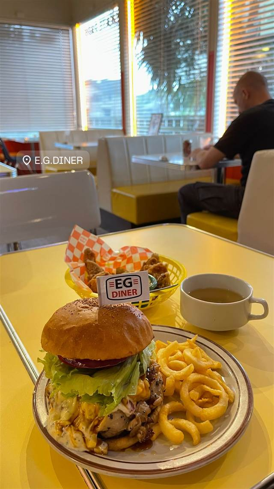

E.G.DINER（イージーダイナー）
サーフショップとスケートパークを併設したハンバーガー店
E.G.DINER
フリーカメラマン時代に出会った本場のハンバーガーに惚れ込んだ大貫初美氏が、5年の研究と移動販売を経て2020年7月に開業。店名は地元「東金」への愛を込めたEAST×GOLDの略で、趣味のサーフィンとスケートを融合し、サーフショップ・スケートパークも併設している。
TRIVIA
豆知識
- 店名「E.G.」はEAST（東）＋GOLD（金）で地元「東金」の頭文字から
- ハンバーガー店にサーフショップとスケートパークが併設されている全国でも珍しい構成
- 開業前はキッチンカーで移動販売をしていた
REVIEWS
世間の評判
3.43食べログ
ジューシーなパティと店内装飾
- スマッシュバーガーのカリッとした食感とジューシーさを評価する声が多い
- ターコイズブルーの装飾など写真映えする内装を評価する声が多い
- バンズが水分を吸いべちゃっとしていたという指摘も複数見られる
- 満車時にはスタッフが誘導してくれるなど接客を評価する声もある
食べログ 口コミ196件
| 創業 | 2020年7月開業 |
|---|---|
| 看板 | ハンバーガー |
| こだわり | 本場アメリカのハンバーガーの味を長年研究して再現 |
| 掲載・評価 | 東金市広報「街かどアイドル」に店主が掲載 |
| どこから | 日帰りで行ける遠さ |
| 予算 | 昼 ¥2,000～¥2,999 夜 ¥2,000～¥2,999 |
| 定休日 | 不定休 |
| 予約 | 予約不可 |
| 場所 | （東金IC至近、車利用中心） 千葉県東金市小野26-5 |
| メモ | サーフショップ・スケートパークを併設した全国でも珍しい造り、犬同伴可 |
食べたもの：ハンバーガーとポテト